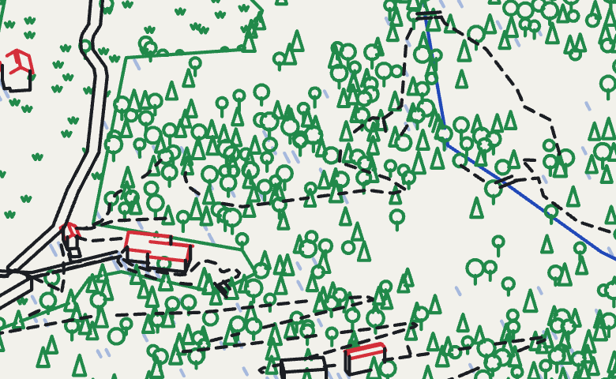
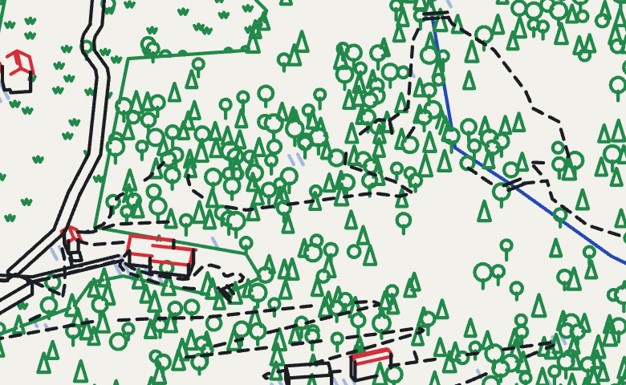
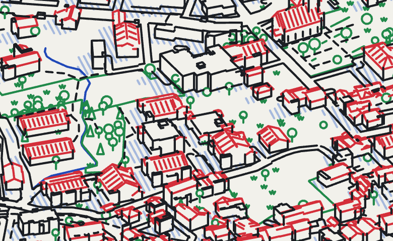

15 November 2026 · Original review · Round 14
Tiny disconnected shadow patches now disappear as whole shapes. The filter measures visible ground shadow after excluding water and occlusion, so a large hidden shadow cannot keep a tiny exposed scrap alive. At the reference pen, the minimum patch area is 1.44 mm²; it grows with pen width.
Retained shadows keep their original mask edges, hatch angle, spacing and phase. The change adds no outline halo. The original shadow union also stays available to ground textures, preserving their existing precedence.



Mollis, Sapporo and Hallstatt at 1:1000 and 1:4000, Detail 1, 0.35 mm pen, optional OSM tags off. Hallstatt at 1:4000 loses 839 strokes and saves about 4.5 minutes of estimated plotting time; whole-sheet waste falls from 11.0% to 8.1%. Rendering times remain in the same general range in these single runs, with an additional visible-mask/component pass and temporary storage proportional to the sheet and visible shadow pixels.
| Sheet | Waste before → after | Estimated time change |
|---|---|---|
| Mollis 1:1000 | 6.0% → 6.0% | -0.08% |
| Mollis 1:4000 | 12.0% → 11.0% | -1.61% |
| Sapporo 1:1000 | 5.4% → 5.4% | -0.04% |
| Sapporo 1:4000 | 11.0% → 10.7% | -0.52% |
| Hallstatt 1:1000 | 4.8% → 4.8% | -0.36% |
| Hallstatt 1:4000 | 11.0% → 8.1% | -4.59% |
Before lab report · After lab report (local generated files)
Reviewed all twelve changed goldens, six LOD sheets and their centre close-ups, plus the enlarged forest and village comparisons. Golden changes are confined to cast-shadow strokes and plot/SVG summaries; counts, census and other feature totals are unchanged. Tests cover whole-island removal with regular and broad pens, identical retained hatch lines, preservation of the source mask, and fragments separated from hidden or water-covered shadow areas. Build and all 587 tests pass.
No physical prints were inspected, nor every seed, view or all 29 presets. The area threshold is measured on the existing raster and can change near its pixel boundary. Thin fringes attached to a large shadow remain; this round does not smooth every edge or clear tone around every foreground line. Sparse tree shadows intentionally disappear at coarse scales. Performance was checked through the six lab runs, not profiled across devices.